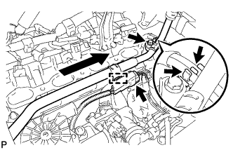
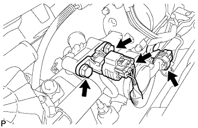
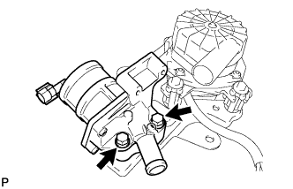

AIR SWITCHING VALVE (w/ Secondary Air Injection System) > REMOVAL |
| 1. REMOVE FRONT FENDER APRON SEAL REAR LH |
 |
Using a clip remover, remove the 4 clips and fender apron seal.
| 2. REMOVE FRONT FENDER APRON SEAL REAR RH |
 |
Using a clip remover, remove the 4 clips and fender apron seal.
| 3. REMOVE INTAKE MANIFOLD |
Remove the intake manifold (Click here).
| 4. REMOVE WATER BY-PASS PIPE SUB-ASSEMBLY |
 |
Disconnect the connector.
Disconnect the wire harness clamp from the water by-pass pipe.
Disconnect the 2 vacuum switching valve hoses from the water by-pass pipe clamp.
Remove the bolt.
Pull out the water by-pass pipe.
Remove the O-ring from the water by-pass pipe.
| 5. REMOVE NO. 2 AIR INJECTION SYSTEM HOSE |
 |
Remove the No. 2 air injection system hose from the rear water by-pass joint and air switching valve.
| 6. REMOVE AIR SWITCHING VALVE ASSEMBLY |
 |
Disconnect the air pressure sensor connector.
Disconnect the air switching valve connector.
Remove the vacuum hose from the air pressure sensor and air switching valve.
Remove the 2 bolts and air pressure sensor from the air switching valve.
 |
Remove the 2 bolts and air switching valve from the air pump bracket.
Remove the air switching valve from the No. 1 air injection system hose.
| 7. DISCONNECT NO. 1 WATER BY-PASS PIPE (w/o Air Cooled Transmission Oil Cooler) |
 |
Remove the 2 bolts and disconnect the water by-pass pipe from the cylinder head cover RH.
| 8. REMOVE AIR TUBE SUB-ASSEMBLY RH |
 |
Remove the 2 bolts, 2 nuts and air tube sub-assembly.
Remove the 2 gaskets.
| 9. REMOVE NO. 3 AIR TUBE |
 |
Remove the 2 bolts, 2 nuts and No. 3 air tube.
Remove the 2 gaskets.
| 10. REMOVE NO. 2 AIR SWITCHING VALVE ASSEMBLY |
 |
Remove the vacuum switching valve hose from the No. 2 air switching valve.
Remove the 2 bolts, gasket and No. 2 air switching valve from the rear water by-pass joint.
| 11. REMOVE NO. 1 AIR SWITCHING VALVE ASSEMBLY |
 |
Remove the vacuum switching valve hose from the No. 1 air switching valve.
Remove the 2 bolts, gasket and No. 1 air switching valve from the rear water by-pass joint.